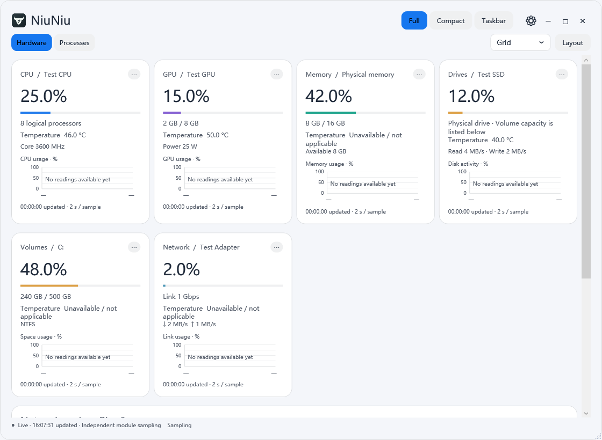
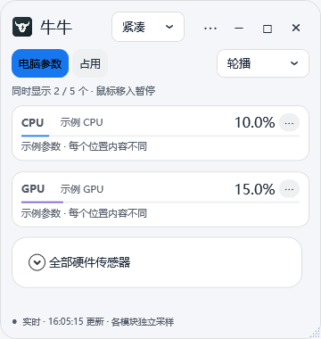

电脑突然变卡
先找哪个程序占用高
打开“占用”，按 CPU、内存、磁盘读写或网络流量排序。
看清程序后，决定是否等待任务完成，或保存工作后关闭不需要的程序。高占用是一条线索，不等于故障诊断。

实际 Windows 界面 · 示例数据；部分截图来自此前版本，界面支持中英文
电脑突然变卡
打开“占用”，按 CPU、内存、磁盘读写或网络流量排序。
看清程序后，决定是否等待任务完成，或保存工作后关闭不需要的程序。高占用是一条线索，不等于故障诊断。
游戏、剪辑、渲染时
在“电脑参数”查看 CPU、GPU 占用和设备支持的温度。
给硬件设置预警值，按需开启 Windows 通知。处理长任务时，温度达到阈值也能收到提醒。
不想反复打开大窗口
切换紧凑面板或 Windows 任务栏，选择要显示的占用、温度和网速。
办公、下载或跑任务时，随时看一眼；需要细查，再展开完整窗口。
牛牛把硬件状态、程序占用、三种显示模式和温度提醒放在同一个工具里。适合希望持续观察电脑、自己选择指标与布局的人。
紧凑面板可调整大小、置顶；任务栏显示你选的指标，需要时再展开。
每个模块选择字段、曲线与采样间隔，调整分组、字体和配色。
CPU、GPU、硬盘分别设温度阈值。通知由你选择开启，也能先发测试通知。
| 你的主要需求 | 可以优先考虑 | 牛牛在这里的定位 |
|---|---|---|
| 偶尔查一次进程占用 | Windows 任务管理器 | 系统已有工具就能查看进程和资源消耗；如果这已满足需求，无需额外安装牛牛。 |
| 查杀木马、清理垃圾、系统修复 | 360 等提供对应功能的安全工具 | 牛牛目前不提供杀毒、垃圾清理、漏洞修复或一键加速。 |
| 常驻看状态，自定义指标与温度提醒 | 牛牛，或你已在用的监控工具 | 可先试试三种模式是否符合你的使用习惯；当前没有与其他监控软件的统一性能对比结果。 |
功能范围参考：微软任务管理器说明 · 360 官方功能介绍。具体功能以各工具当前版本为准。
在“电脑参数”看硬件，在“占用”按想查看的指标排序。名字不熟悉时，先确认用途再操作。
详细查看用完整模式；桌面常驻用紧凑模式；只留几项数字时用任务栏模式。
模块“⋯”里设温度阈值，再到“显示设置 → 通用设置”开启温度通知并保存。可先点击“发送测试通知”。
完整仪表板、紧凑面板、真正的 Windows 任务栏。三种模式独立选择内容，颜色保持协调。

当前主要版本。x64 安装包，包含运行环境；安装位置和数据位置均可选择，默认数据放在安装目录的 Data 中。
下载 EXE · 65.5 MB ↓版本说明与 SHA-256 校验 →旧 Mac 预览版已反馈存在问题，尚未修复确认。本次仅发布 Windows 1.5.2；Mac 版修复并验证后再提供推荐下载。
当前安装包未获得正式发布者签名认证，Windows 和 macOS 可能显示安全提示或阻止运行。Windows 监控需管理员权限；部分温度需要另装官方签名的 PawnIO 驱动。软件不会关闭系统防护。传感器取决于硬件支持，程序能耗是估算值，结束进程可能丢失未保存内容。
当前版本可免费安装运行，包括个人和企业内部使用。核心源码不公开；未经另行授权，不得修改、再分发或售卖牛牛原创部分。未来版本可有不同收费与许可条款。第三方组件遵循各自许可证。
本地监控与设置保存在你的电脑。开启公网信息查询会请求 Ping0，默认启动时和每 10 分钟查询一次，可关闭或调整；延迟检测会联系你设置的目标。GitHub 托管网站和下载文件，本页面未添加第三方分析脚本。
Windows 可自选数据目录，升级保留原配置，卸载保留个人数据。
欢迎到 GitHub Issues 描述系统版本、操作步骤与现象。提交截图或日志前请先移除个人信息和密钥。 提交反馈 ↗